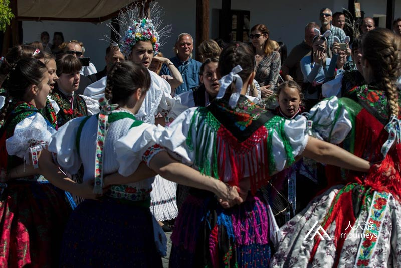
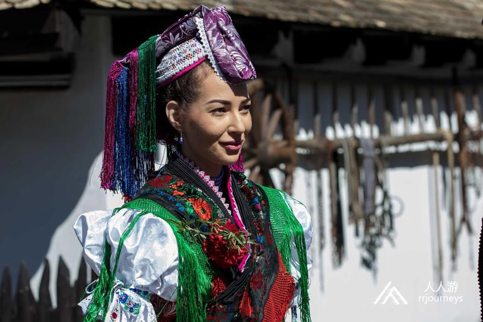
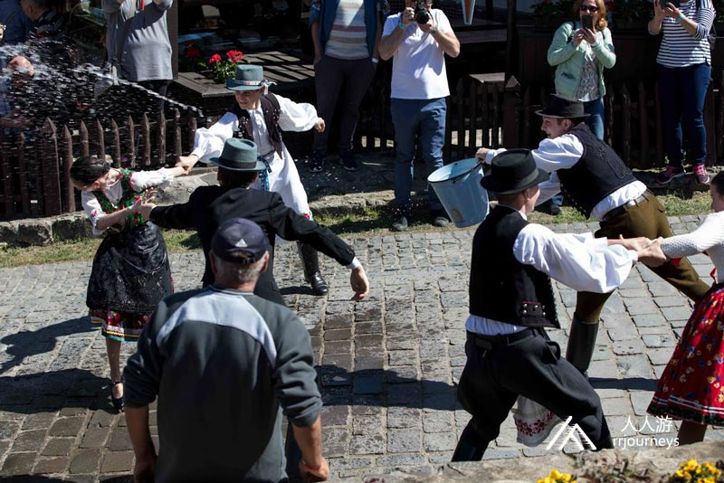
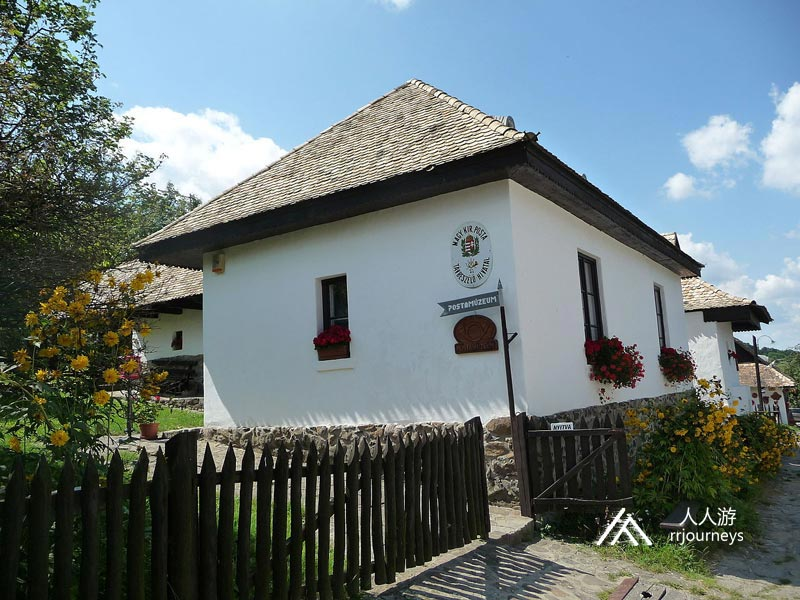
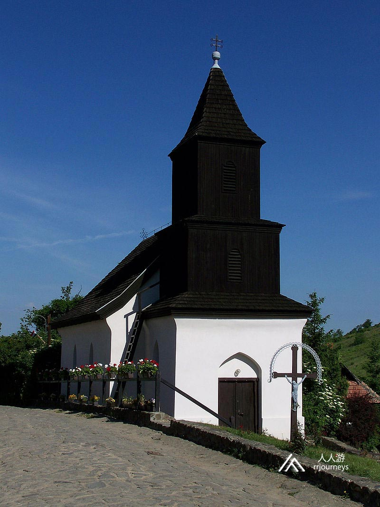
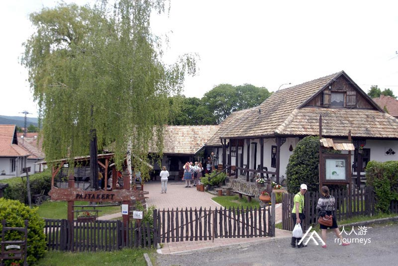
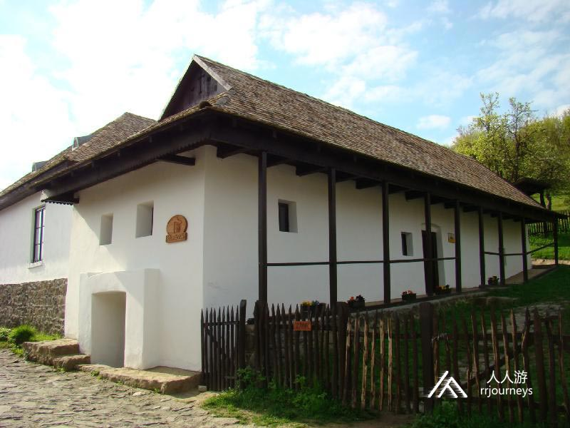

特色旅游
1日游
2-4日游
5-10日游
精品长线旅游
地址：匈牙利 布达佩斯 Budapest-Keleti, 1087
电话：0036-30-9574162
邮件：rrjourneys@gmail.com
网站：http://www.rrjourneys.com
【美景】
霍尔洛克于1987年被列为世界遗产，并因此享誉全球。“鸦石村”有一个美丽的故事：在远古时代，一位美丽的姑娘被恶人掳去，一位巫婆化身为乌鸦救出了姑娘，并用财主建庄园的石头建造了一座城堡，用来保护姑娘。它下面的村庄也因此而得名。这就是现在的“鸦石村。
Goulash牛肉炖汤
Libamáj 鹅肝
Lángos特色油饼
Toltott Kaposzta 圆白菜肉丸
Halászlé 鱼汤
Ujhazi Tyukhuslevesi 家常老鸡汤
Kurtoskalacs 烟囱卷面包
Egri Bikavér埃格尔公牛血葡萄酒
霍尔洛克
景点:霍尔洛克城堡
霍尔洛克城堡位于城镇西侧的切尔哈特山头上的一块约400米高的岩石上，根据其天然的样子而以不规则形状建造。从空中看，这座城堡就像蜗牛的房子，位于五角形的老塔上。1310年见于文字记载。堡垒在几个世纪中逐渐扩大，在最初的13世纪城墙上建造了峡谷，堡垒，住所和水箱。15世纪末，建造了一个内部城堡的小庭院，哥特式风格。16世纪初，将五角形塔楼扩大了一层，将宫殿扩大了两层，围绕塔楼的墙壁建立了防御性走廊，并建造了西部外墙大梁。基于更宽敞，更华丽的新宫殿楼层。13世纪中叶蒙古人入侵后城堡作为军事用途，第1次用来保护本地区的安全。1552年奥斯曼帝国军队首次占领这座城堡。之后数年间它曾多次在奥斯曼和匈牙利之间易手，1544年土耳其人后哈布斯堡军队将霍尔洛克纳入了皇家边境要塞体系。奥斯曼军队最终于1683年放弃了它。
城堡气势宏伟，内部设有城堡博物馆，拥有城堡模型和服饰的展览。自从城堡被列为世界遗产后，欧盟投入了相当于17亿福林的巨资修复兰顶城堡和村庄里的设施。
霍尔洛克古村和周围被保护部分是一座被列为世界文化遗产的古老村落，拥有55座精美的传统风格的乡间房屋，完好保留了匈牙利乡村的传统生活方式，包括别出心裁的霍尔洛克乡村博物馆，邮政博物馆，帕洛奇玩偶博物馆，霍尔洛克风景保护区展馆等有趣的展馆，它们展示了这个地区迷人的风光和民间风俗文化。还有一座圣马丁教堂。圣马丁教堂是本地的头号地标。
霍尔洛克周围的部分也被列到联合国教科文组织的世界文化遗产和自然遗产名录。村落的老村庄部分反映了保存在中欧最佳条件下的民间建筑风格。老村有56处受保护的居民楼。直到17世纪末，古老的木屋都没有基础地而是用木头建造。建筑物内外都被泥浆覆盖。1909年至1911年之间的房屋重建，也适应了传统的乡村结构，它们建立在一个石头地基上，上面有土坯墙。该地在1909年的大火，几乎将所有房屋都被烧毁。
景点：鸦石村民间服装 直到今天霍尔洛克的民间服装仍然被当地人喜爱着，不过只是在著名的节日或是周日群众大会上穿着的服装。直到20世纪初，在封闭的小聚居区中以前广为流行的简单的蓝色服装才被红色，蓝色，绿色羊绒和丝绸等的成品所代替，还绑着一条绣在上裙边的黑色围裙。他们穿着一条羊绒围巾，肩膀上镶嵌饰品，头上带有饰带，在当地叫“刹车带”。刹车带对年轻女性尤其有趣：它是由白色丝绸制成的珍珠，和彩带装饰，已婚妇女只能在生下第一个孩子之前佩戴。节日服装中最昂贵的一件是靴子：女孩穿红色，妇女穿黑色。妇女们戴着许多戒指。这是基于民间传说，据说土耳其苏丹的小孙子在城堡的花园里打着戒指，系着蓝丝带，玩耍时被乌鸦之王抓住。为了纪念，霍尔洛克妇女们戴着许多戒指。更有特色的是短裙，多裙的女装，这些都是真正的杰作。在几乎没有覆盖膝盖的帆布衬裙居然是22层，裙摆前面绣有丰富的黑色丝绸厨师围裙。精致，无绒或紫色蕾丝的衬衫和彩色条纹装饰的围巾为服装增色不少。未婚的女孩将头发编成小辫儿并绑上彩带，并将流苏的真丝围巾折叠，在其下放有串珠的头带。脚踝靴脖子上的装饰五到六个串珠子。  景点:鸦石村风景保护区 霍尔洛克风景保护区是一片地势起伏和缓的林山，可以俯瞰霍尔洛克镇的全景。该保护区于1977年建立了比克国家公园。它涵盖了1495平方公里的区域，并一直是联合国教科文组织世界遗产。布克国家公园管理局已在城堡周围指定了一条城堡远足小径，标有绿色，带有23个信息公告板，介绍了该地区的文化和自然价值。城堡小径的第一部分从停车场一直通往城堡，然后从城堡下到旧村，这两处都是世界遗产。
景点：鸦石村复活节 每年举办的霍尔洛克最大的活动是复活节，庆祝传统和生活乐趣。丰富的民俗节目，帕罗克美食，带浇水的民间习俗，音乐会，家庭和儿童节目为客人提供难忘的经历。在复活节的日子里，一个连续的节目等待着游客到迷人的鸦石村村，那里古老村落的农舍和石质街道带我们回到了过去。  景点：邮政博物馆-鸦石村展览馆 1990年，邮政博物馆-展览馆在霍尔洛克老村的一所受保护民宅中开幕。它展现了当地和周围的特色。分公司是布达佩斯邮政博物馆。直到第一次世界大战为止的匈牙利邮政史和霍尔洛克的邮政历史都可查到。  景点：鸦石村天主教堂 霍洛科沃罗马天主教堂的小罗马塔楼是1889年由该村居民通过公共捐赠修建的。今天的天主教堂以图尔的圣马丁主教命名。该教区于1342年建立。教堂的修复于1980年完成。教堂在一条倾斜的道路的边缘。它是由简单的长方形地板石和土坯混合而成的。教堂中殿的瓦状屋顶覆盖马鞍。该村庄为金字塔式的塔楼教堂。该塔楼于1862年就已经站在这里。钟楼高出前教堂的拱顶圣所，成为教堂的前院，塔的底层，为教堂的入口，通过拱顶连接到教堂中殿。  景点：织造车间 织造车间保留传统的耕种和旧手工艺品。建立并运营了数十年的织造车间。在谷仓花园织造车间的老村入口处，我们可以看到一种最吸引人的编织技术形式，即飞行堕编织机，在此过程中织布工进行了帕洛奇图案的编织。在古老的乡村家庭中，大多数衣服和家用纺织品都是在家中制作的。因此，大麻的种植，加工，编织，缝纫，刺绣的工作必须由自己完成。  景点：乡村博物馆 乡村博物馆在教堂的对面，早在1867年就已经存在的住宅建筑的遗迹，自1964年以来一直是博物馆。世界遗产之一的霍尔洛克的奥法鲁民俗建筑合奏，真实地唤起了20世纪初帕洛克人聚居地的形象。1909年大火烧毁了整个村庄之后的现在形式的建造。它位于垂直于街道的三部分建筑的尽头，城堡山的斜坡上，在它的前面有一个地下室，地下室有直接通向街道的加多尔出口。墙壁是用粘土在石基上铺设的。小木板屋顶的山墙屋顶覆盖有瓷砖，并进行了适度的镂空装饰。在侧面立面的线条中，有一个简单的木柱形门廊，后壁一直延伸着，从此处进入房屋的入口。这里的房屋内部展示了上个世纪的农民世界。永久性的展览展示了一对中等身材的年轻夫妇及其子女和祖父母的住所。 
6天5夜乌克兰小众深度游
7天6夜克罗地亚、波黑小众
5天4夜波兰、斯洛伐克小众
四天三夜奥地利、斯洛文尼亚
匈牙利最大的滑雪场一日游
6天5夜，奥地利滑雪自由行
7天6夜，奥地利旅游滑雪自
4天3夜，奥地利滑雪自由行
Copyright 2020 www.rrjourneys.com
人人游 旅游官方网站 版权所有 All Rights Reserved